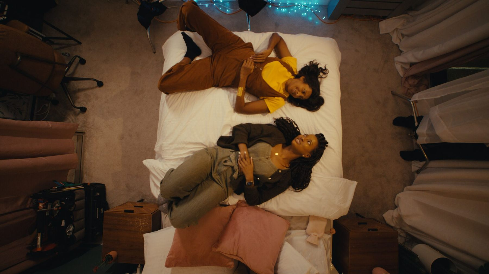
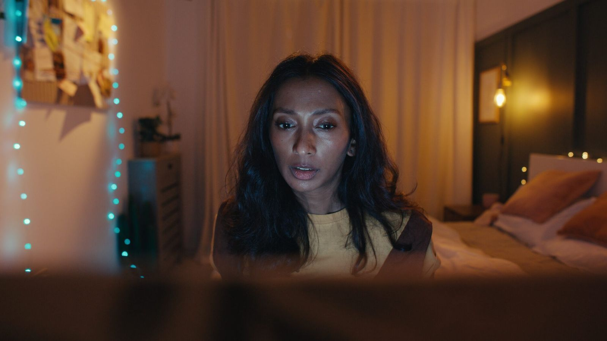
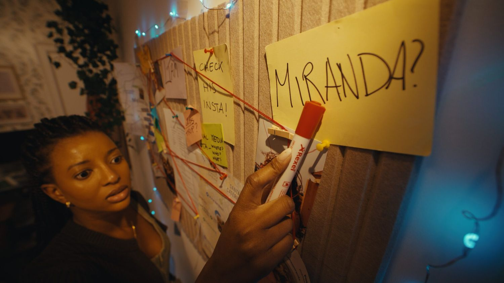
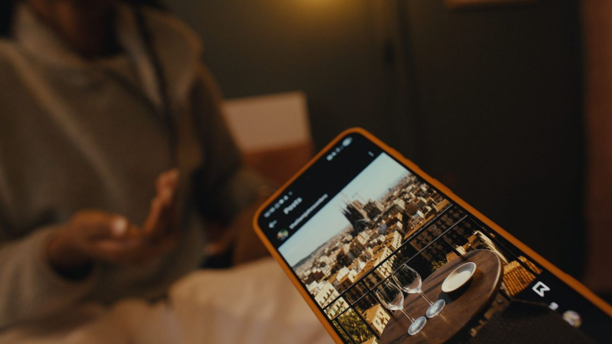
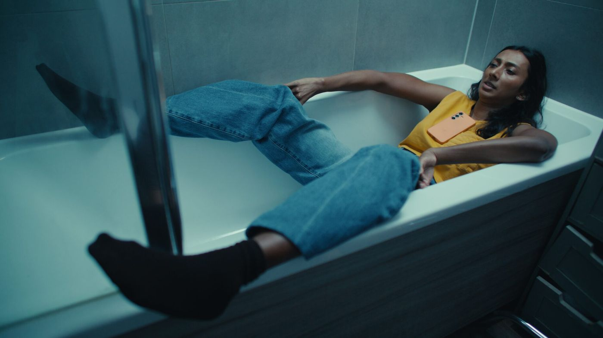
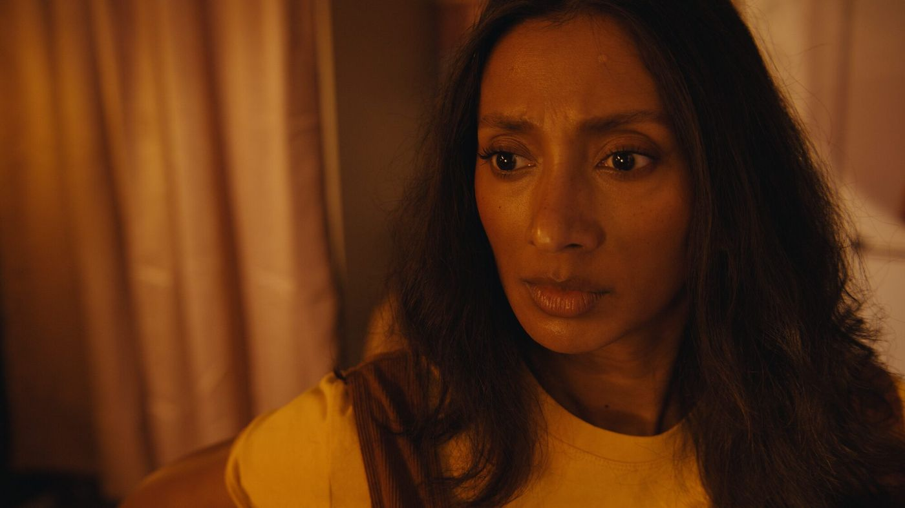
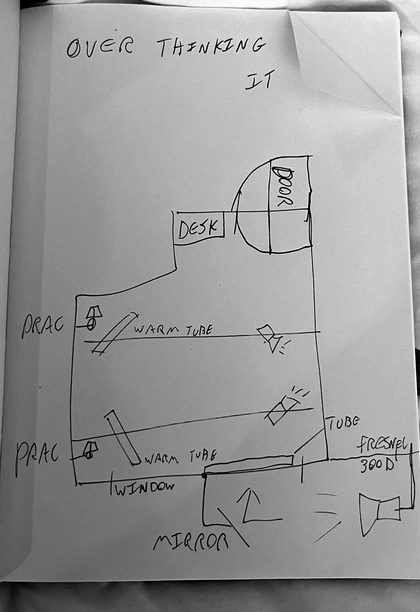
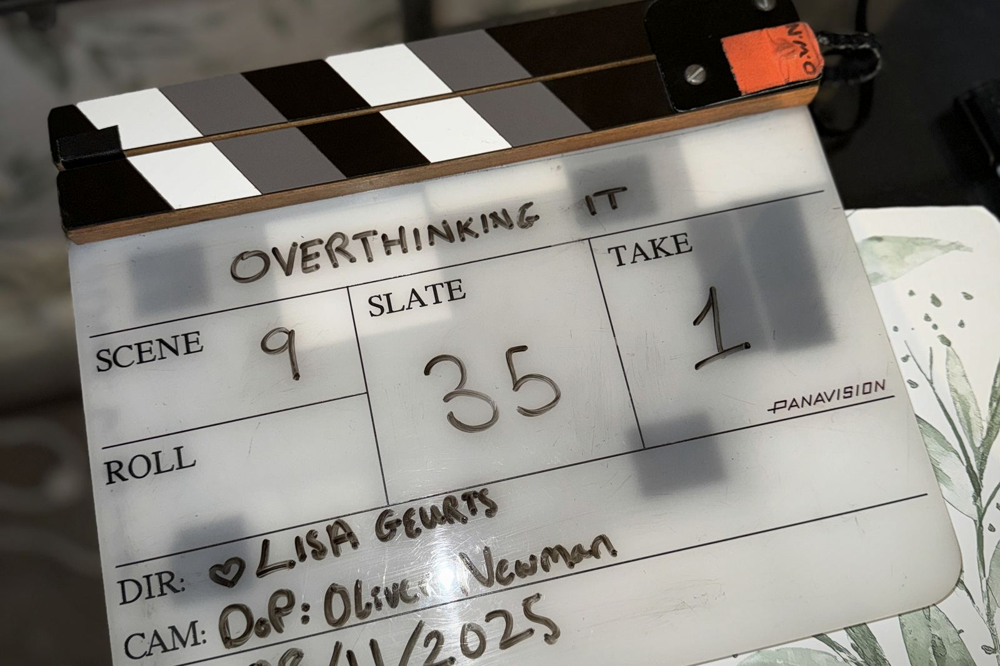
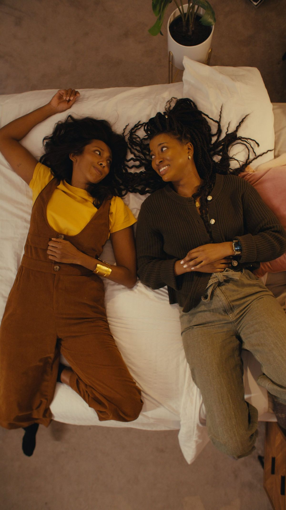

Overthinking It
In post-production
Directed by Lisa Geurts · Written and produced by Ayo Hana
When a young woman suspects her boyfriend is cheating, she and her tech-savvy best friend turn into digital detectives, accidentally uncovering more than they bargained for.
Synopsis
Nikita is twenty-nine and almost certain her boyfriend is lying to her. Her best friend Temi has a laptop, a corkboard and no sense of proportion. Over one escalating day the two of them turn a bedroom into a detective headquarters, and find out how far a friendship will go on very little evidence.
It is built as a hyper-stylised comedy: split screens, rapid-fire monologues, montage, and paranoia that climbs faster than the evidence does. Underneath the investigation it is a film about the kind of friendship that will help you do something stupid at three in the afternoon and stay for the consequences.
In tone
Only Murders in the Building meets Broad City.

The idea
Why this film.
The premise came out of something ordinary and recognisable: the moment a small, ambiguous detail on someone’s phone becomes a full investigation, and a friend who should talk you down instead hands you a highlighter.
The decision that shaped everything else was to play it at the pitch of a real thriller. One bedroom, two days, and a visual grammar borrowed from films that make small actions feel enormous. Shaun of the Dead turns making tea into an action sequence with quick inserts, whip pans and sound; the same rhythm is used here for pinning notes, opening laptops and typing too fast. Scott Pilgrim vs. the World puts text on screen and splits the frame until an ordinary conversation feels epic; the investigation is chaptered on screen and the words from the evidence board push into frame.
The corkboard was built as a practical set piece rather than a graphic: printouts, sticky notes, photographs, red thread. By the second day the wall had become the plot, and the film could be blocked around it.





Production
The room, drawn before it was lit.
Almost the whole film happens in one bedroom, so the light in that room had to carry it. Practicals, two warm tubes, a fresnel and a mirror were worked out on paper before anyone arrived, which is the only reason two days was enough.

Cast
- Ayo Hana
- Temi
- Anita Karunasaagarar
- Nikita
- Richard McIver
- Liam / Hotel Receptionist
Crew
- Directed by
- Lisa Geurts
- Written by
- Ayo Hana
- Produced by
- Ayo Hana
- Director of photography
- Oliver Newman
- Music
- Ellahe and Julz West
- First assistant director
- Mira El Bacha
- First assistant camera
- Shayan Gholipourkakroudi
- Script supervisor
- Marian Reynolds
